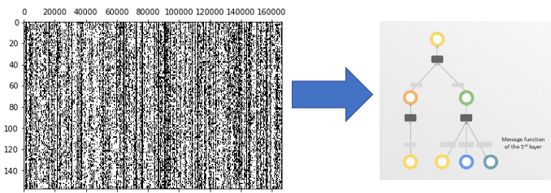
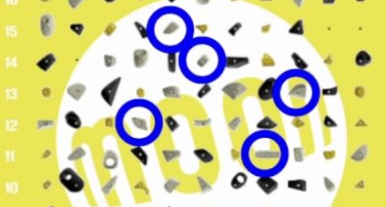
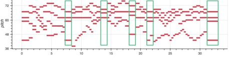

Our research groups are the best opportunity we offer students for getting hands-on experience with developing AI technologies.
All levels of understanding are welcome; in fact, we encourage Freshman to join so they can start building their knowledge about AI even before their MSOE education.
To accomplish this, these groups are facilitated in a mentor/mentee style, driven by other students or industry partners on projects which provide both a motivated purpose and pathway for a final publication.
After hosting over 15 research groups these past two years, with over half published and presented at conferences, we hope you will join us in developing the technology of tomorrow!
Below is a list of completed and ongoing research MAIC members have led.
Our Research Groups
To sign up, please either attend the introductory meetings at the beginning of the Fall Semester for a sign-up form or reach out to an eboard member before the end of October.
Researching through the Academic Catalog is tedious when wanting to find information about the university
Approach
Using a transformer to “learn” the catalog and be able to answer questions about the university and courses
Progress
Currently working on a proof-of-concept LSTM model with the SQUAD dataset
DNA GAT
Members
Alex Drobek
Arman Hossain
Collin Schmocker

Problem
Genomic Inversion Detection
Approach
Graph Attention Networks (GATs)
Progress
Formatting Data for Graph Input
Emotion FC: Facial Emotion Recognition from photographs
Members
Hugo Garrido-Lestache
Alexander Chapovalov
Samuel Abel
Alex Ruchti
Ryan Canalia
Given a photograph of a face, what is their emotion?
Approach:
Image classification via convolutional neural networks
Progress:
Acquired dataset
Made repository
Built basic model
Next steps:
Tie data to model
Train model
Moon Men: MoonBoard Route Classification and Generation
Members
Aiden Miller
Joshua Grant
Carter ulschmid
Aydin Ruppe
Michael Kirkton
Benjamin Weber

Problem
Classifying and generating MoonBoard routes
Approach
Putting holds into a series and using Transformer
Progress
Working classification model
sToNKs : Stock prediction
Members
Ben Fouch
Luka Harwood
Kevin Paganini
John Webmeier
Ryan Peter
Hunter Fritchen
Jackson Rolando
Problem
Stock movement prediction
Approach
Collecting data from lots of different sources to get a more whole picture of what is influencing the price of the stock.
Progress
Data collected from reddit, twitter, news sources, and financial data (ticker prices, quarterly data, fundamentals)
Traffic Jam
Members
John Olson
Nathan Johnson
Zachary Stoffel
Noah Nieberle
Thomas Benzshawel
Michael Conner
Alex Moran
Problem
Traffic
Approach
AI
Progress
Traffic
The Transformer Troubadors
Members
Luke Harwood
Code Steinmetz
Adam Buker
Andy Dao
Jiri Liska
Lucas Gral

Problem
Music be hard
Approach
Sequence to Sequence Transformer
Take in part of a midi song, fill in the rest
Progress
We have data
Setting up data processing pipeline
Setting up model
Video Smootherizer
Members
Tillie Pasternak
Mitchell Johnstone
Autumn Beyer
Tyler Schreiber
Problem
Videos don't be smooth
Approach
Transformer
Progress
It trainin
Team 7: Video to Audio Generator
Members
Samir Mahmud
Kong Xiong
Konrad Rozpadek
Adam Haile
Xander Neuwirth
Problem
Take video frames, predict the audio
Approach
Deep learning: Frame encoder and Audio Decoder
Progress
Have a script written that extracts frames from videos with manually applied labels
Jupyter notebook to train a CNN meant to categorize the frames of video and predict what category of video is shown
XprospeCT
Members
Ben Paulson
Sydney Balboni
Theodore Colwell
Natalia Bukowski
Joshua Goldshteyn
John Cisler
Julia Kalish
Andrew Crisler
Problem
Getting CT scans is expensive and exposes patients to significant levels of radiation
This is especially problematic is patients have chronic conditions that require scans often
However, Chest X-rays are one of the lowest radiation imaging forms available
What if there was a way to create a more helpful view from just two chest X-rays?
Approach
We are planning on using a complex CNN with residual connections to create a 2D view to 3D view converter
The 2D views will be created by using a CycleGAN style transfer to convert from Averaged CT scan views to X-ray style, and the main model will use 2D to 3D upscaling convolution layers
Progress
Currently working on the final model architecture, and have some examples going from CT to X-Ray